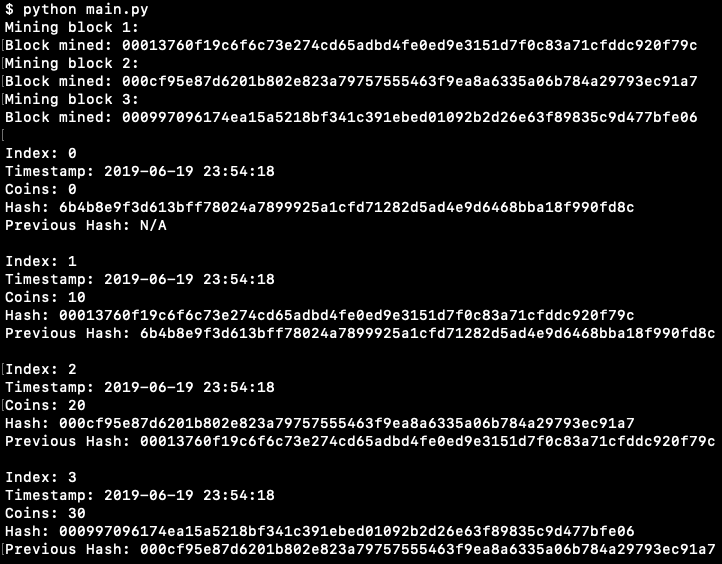

6/19/2019 - The idea to create this tutorial comes from another tutorial I read written in javascript. To follow along, you can either use this online editor, or you can use an editor of your choice. You can also look at the complete source code if you get stuck at any point.
To understand this tutorial, you should be able to use the following python features: for loops, classes, while loops, if/else statements, f-strings and the __str__() method. To read up on these features before completing this tutorial see the python documentation. If you want something more beginner friendly, try: w3schools tutorial.
This tutorial will help you increase your knowledge of the core python features, and it will also help you gain a better understanding of how a blockchain works. At a basic level, a blockchain is a chain of transactions (blocks) with each block containing a few different properties.
We'll start by creating a main.py file and adding a few imports at the top of the file:
#main.py
import hashlib
import datetime
import time
The hashlib import will be used for the hash function (more on that soon), and the datetime/time import will be used for timestamps. Next we're creating a timestamp object that we'll later use to create new blocks:
#main.py
...
ts = time.time()
stamp = datetime.datetime.fromtimestamp(ts).strftime('%Y-%m-%d %H:%M:%S')
Here we're using the datetime/time library to create a timestamp that can be displayed as a string. If you print(stamp) your output will be a string with the current date and time. Right now that is "2019-06-19 14:59:56" for me. The format doesn't matter for this tutorial, but if you want to read up on other directives that can be used for formatting, you can look at the python documentation.
Now we'll begin creating our Block class:
#main.py
...
class Block:
def __init__(self, index, timestamp, coins, previous_hash = ''):
self.nonce = 0
self.index = index
self.timestamp = timestamp
self.coins = coins
self.previous_hash = previous_hash
self.hash = self.calculate_hash()
There are six properties per block: nonce, index, timestamp, coins, previous_hash and hash. The index property will contain an integer representing the position on the blockchain. So the first block created will be at index 0, the second block will be at index 1, and so on. The timestamp property will be a string representing the time/date of each transaction, and the coins property will be an integer representing the amount of coins traded in the transaction. The hash property in each block will be computed using the SHA256 cryptographic hash function, and each block will also contain the hash of the previous block. Luckily python has a library that provides a method that makes it very easy to compute a SHA256 hash code. SHA256 is one of the most secure hash functions, and it's a one way funtion that can't be decrypted back to its original value. I will explain the use for the nonce property later in the tutorial.
Note that in the constructor we set the previous_hash to empty, and the current hash is calculated with a method that we haven't defined yet. Later in the tutorial we will define a method to set previous_hash, but for now, in our Block class, lets define our calculate_hash() method:
#main.py
...
def calculate_hash(self):
return hashlib.sha256(bytes(self.index) +
bytes(self.nonce) +
bytes(self.timestamp, encoding='utf-8') +
bytes(self.previous_hash, encoding='utf-8') +
bytes(self.coins)).hexdigest()
Here we're using the SHA256 method from the hashlib library that we imported at the top of the file. In order to get a unique hash code for each block, we're going to add all of the properties together and pass it into the function. The properties being passed into the function need to be converted to bytes, so we use the bytes() method to do so. When we pass an integer into the bytes method we only have to pass the integer as the argument. When passing a string into the same method we have to pass two arguments: the string and the encoding of the string. This function will generate a 256-bit (32-byte) hash code.
Example: When you pass "jimmy" into the function, the unique hash code is: "930a68a51a2db950f58fd3b0b5f1d76f56afaa16e12a418d71ca6c25f2390424"
The next method we'll define in our Block class is mine_block(). This is commonly referred to as proof-of-work or mining:
#main.py
...
def mine_block(self, difficulty):
n = '0' * difficulty
while(self.hash[0:difficulty] != n):
self.nonce += 1
self.hash = self.calculate_hash()
print(f"Block mined: {self.hash}")
The "difficulty" parameter is an integer that will represent the amount of zeros required at the start of a hash code in order to make it valid. For this example, let's say the "difficulty" is 4. The first line of code in the method creates a string of zeros that will be of length 4 ("0000"). The while loop will compare this string to the first 4 characters in the hash function, and the while loop won't break until those first 4 characters are 0's. Also note the "nonce" property being used here. Nonce gets incremented during each iteration, and it will cause the calculate_hash() function to compute a different hash code each time. The higher the "difficulty," the longer it takes to find a match.
One of the reasons you have to mine blocks in a blockchain is so that there's time inbetween submissions. This is one of many security features used to keep hackers from exploiting the system.
We're almost done with our Block class. The only thing left to do is add a __str__() method so that we can print the contents of each object:
#main.py
...
def __str__(self):
return (f"Index: {self.index}\n \
Timestamp: {self.timestamp}\n \
Coins: {self.coins}\n \
Hash: {self.hash}\n \
Previous Hash: {self.previous_hash}\n")
Note: the backslash at the end of a line is python's syntax for breaking a long line of code into multiple lines of code.
We're about halfway done! Next we're going to create our Blockchain class:
#main.py
...
class Blockchain:
def __init__(self):
self.chain = [self.create_genesis_block()]
self.difficulty = 3
def create_genesis_block(self):
return Block(0, stamp, 0, "N/A")
The constructer creates a list called "chain" that contains one block (a genesis block). A genesis block is the first block in our blockchain, and in the method that creates it we are passing in a 0 for index, the current time/date for timestamp, a 0 for coins and "N/A" for previous_hash. When the genesis block is created, a hash code will be calculated, and that hash code will be used for the previous_hash of the next block. Also, note that we're setting the "difficulty" to 3 here. That means that each time we call the mine_block() method the computer will perform calculations until it computes a hash code with 3 zeros at the beginning. "Difficulty" is a value that we can go back and change so that we can experiment with how long it takes to calculate a hash code with more zeros.
Next we're going to add two more methods to our Blockchain class:
#main.py
...
def get_latest_block(self):
return self.chain[len(self.chain) - 1]
def add_block(self, new_block):
new_block.previous_hash = self.get_latest_block().hash
new_block.mine_block(self.difficulty)
self.chain.append(new_block)
The get_latest_block() method is pretty self explanatory. It returns the last block in the chain, and we use it in the add_block() method to retrieve the hash from the previous block. The add_block() method then calls the mine_block() method before appending the new_block to the chain.
We only have one more method to add to our Blockchain class, and that's the __str__() method:
#main.py
...
def __str__(self):
s = ''
for i in range(len(self.chain)):
s += f"{self.chain[i]}\n"
return s
This method returns a long string that's created by looping through the entire chain, and we need this string so that we can print our blockchain. When it's printed, it won't look like one long string because of the newline chars, but it actually is just one long string.
We're now going to add our last section of code to create a blockchain, create 3 blocks and print out the entire chain:
#main.py
...
if __name__ == "__main__":
jimmy_chain = Blockchain()
print("Mining block 1: ")
jimmy_chain.add_block(Block(1, stamp, 10))
print("Mining block 2:")
jimmy_chain.add_block(Block(2, stamp, 20))
print("Mining block 3:")
jimmy_chain.add_block(Block(3, stamp, 30))
print('')
print(jimmy_chain)
Now just run the script and you'll see the results!
You can see that the calculation is almost instant with a difficulty of 3. Try increasing the difficulty and see how long it takes to compute.
Thanks for checking out the tutorial, and I hope you find it useful! Click here to see the full source code.
Back to homepage